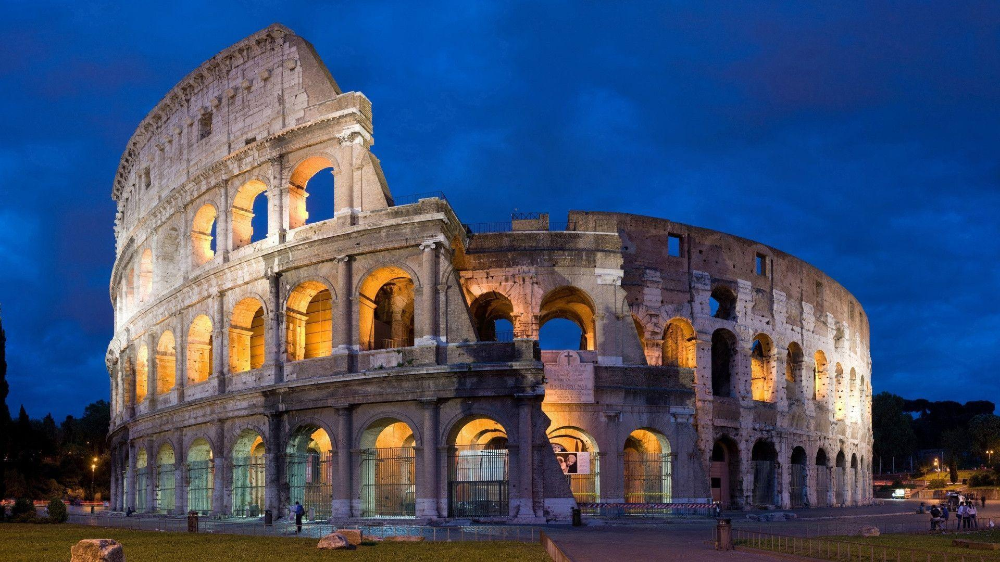
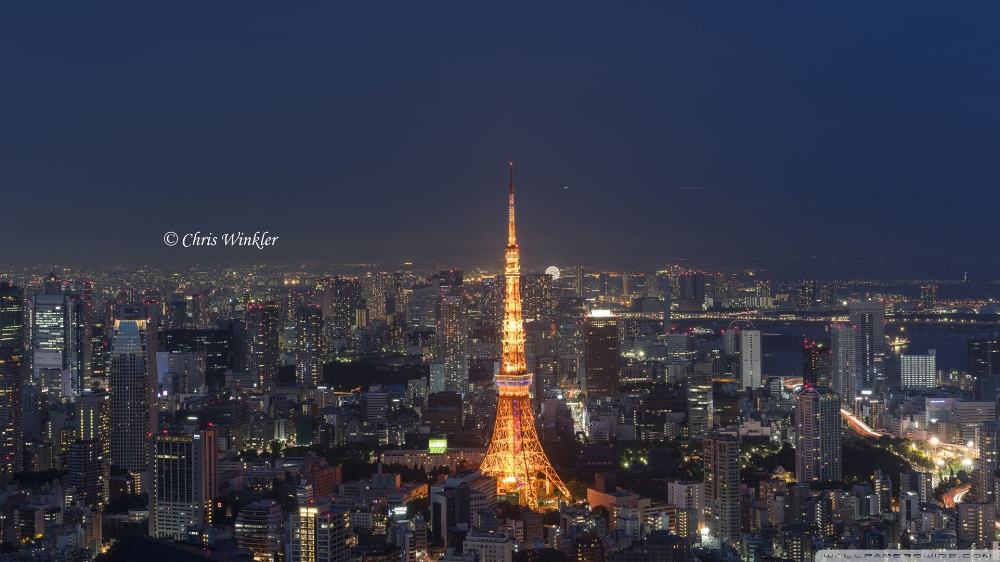

Tentang Penulis
Penulis merupakan seorang mahasiswa yang sedang berkuliah di Universitas Trisakti jurusan teknik Infomatika semester 6. selain berkuliah
penulis juga sedang mengikuti program bangkit 2021 dengan path cloud computing. penulis berharap dengan mengikuti program ini penulis dapat
Belajar tentang mempelajari cloud computing, meningkatkan soft skill penulis, dan menambah koneksi untuk penulis.
Italia

Italia adalah sebuah negara kesatuan republik parlementer di Eropa Terletak di jantung Laut Mediterania.
Italia berbatasan dengan Prancis, Swiss, Austria, Slovenia, San Marino dan Vatikan. Italia mencakup area seluas 301.338 km² (116.347 mi²),
dan dipengaruhi oleh iklim sedang dan iklim mediterania.
Dilihat dari bentuknya, peta Italia berbentuk seperti sepatu bot atau di Italia sering disebut lo Stivale.
Dengan jumlah penduduk mencapai 61 juta jiwa, Italia merupakan negara anggota Uni Eropa ketiga yang paling banyak penduduknya setelah Jerman dan Prancis.
Japan

Jepang adalah sebuah negara kepulauan di Asia Timur. Letaknya di ujung barat Samudra Pasifik, di sebelah timur Laut Jepang, dan bertetangga dengan Republik Rakyat Tiongkok, Korea Selatan, dan Rusia.
Jepang terdiri dari 6.852 pulau dan menjadikannya sebagai negara kepulauan. Pulau-pulau utama dari utara ke selatan adalah Hokkaido, Honshu (pulau terbesar), Shikoku, dan Kyushu.
Sekitar 97% wilayah daratan Jepang berada di keempat pulau terbesarnya. Sebagian besar pulau di Jepang bergunung-gunung, dan sebagian di antaranya merupakan gunung berapi.
Gunung tertinggi di Jepang adalah Gunung Fuji yang merupakan sebuah gunung berapi.
Penduduk Jepang berjumlah 128 juta orang, dan berada di peringkat ke-10 negara berpenduduk terbanyak di dunia.
Inggris
Inggris adalah sebuah negara konstituen yang merupakan bagian dari Britania Raya. Negara ini berbatasan dengan Skotlandia di sebelah utara dan Wales di sebelah barat, Laut Irlandia di barat laut, Laut Keltik di barat daya,
serta Laut Utara di sebelah timur dan Selat Inggris, yang memisahkannya dari benua Eropa, di sebelah selatan. Sebagian besar wilayah Inggris terdiri dari bagian tengah dan selatan Pulau Britania Raya di Atlantik Utara.
Inggris juga mencakup lebih dari 100 pulau kecil seperti Isles of Scilly dan Isle of Wight.